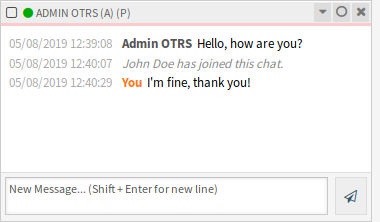
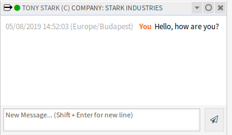
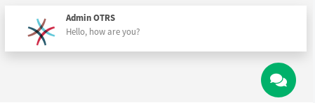
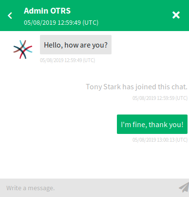
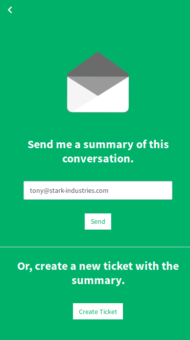
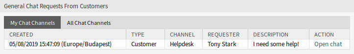
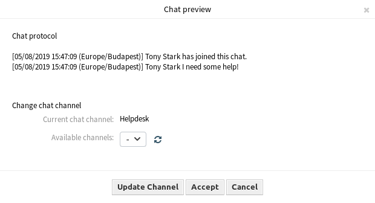
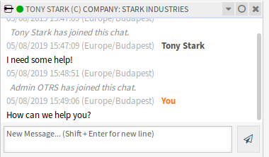

Csevegések kezelése¶
Lásd még
A ChatEngine::Active rendszerbeállítás aktiválása szükséges a funkció használatához.
A csevegéskezelés képernyő a csevegés funkció középpontja. Egy ügyintéző itt kezelheti a csevegéseket, valamint láthatja és elfogadhatja a nyitott kéréseket. Ez a képernyő szolgáltatja a csevegéskérések listáját az ügyfél-felhasználóktól, a nyilvános felhasználóktól és más ügyintézőktől, valamint egy áttekintőt az összes aktív csevegésről.
Használja ezt a menüpontot a csevegések kezeléséhez. A csevegéskezelés képernyő a Csevegés menüben érhető el.

Csevegéskezelés képernyő
Minden egyes csevegőcsatorna szűrhető a felületi elem tetején lévő lehetőségekkel, hogy az Összes csevegőcsatorna vagy csak a Személyes beállítások képernyőn megadott Saját csevegőcsatornák legyenek felsorolva.
Új csevegés indítása¶
Egy csevegés résztvevője lehet egy ügyintéző, egy ügyfél-felhasználó vagy egy nyilvános felhasználó.
Ügyintéző – ügyintéző¶
Egy csevegés indításához egy másik ügyintézővel:
Használja a Bejelentkezett felhasználók felületi elemet a vezérlőpulton. Azok az ügyintézők, akik képesek használni a csevegést, egy csevegés ikonnal rendelkeznek a nevük mellett.

Elérhető ügyintézők
Kattintson a csevegés ikonra egy ügyintéző neve mellett.
Írja be az első üzenetet a Csevegés indítása párbeszédablakba, és küldje le az üzenetet.

Csevegés indítása párbeszédablak
Miután a csevegéskérés elküldésre került a másik ügyintézőnek, figyelje a csevegést a csevegéskezelés képernyőn. Egy böngészőértesítés jelenik meg az ügyintéző tájékoztatásához.

Saját aktív csevegések felületi elem
Várjon a válaszra. A másik ügyintézőnek el kell fogadnia a csevegéskérést a Csevegés megnyitása hivatkozással.

Személyes csevegéskérések Önnek felületi elem
Ha a másik ügyintéző elfogadja a csevegéskérést, akkor most már cseveghetnek.
Ügyintéző – ügyintéző csevegés
Ügyintéző – ügyfél-felhasználó¶
Egy csevegés indításához egy ügyfél-felhasználóval:
Használja a Bejelentkezett felhasználók felületi elemet a vezérlőpulton. Azok az ügyfél-felhasználók, akik képesek használni a csevegést, egy csevegés ikonnal rendelkeznek a nevük mellett.

Elérhető ügyfél-felhasználók
Lásd még
Az ügyfél-felhasználók kiválaszthatók az Ügyfél-felhasználó információs-központban vagy a Jegynagyítás képernyő Ügyfél-információk felületi eleméből is.
Kattintson a csevegés ikonra egy ügyfél-felhasználó neve mellett.
Írja be az első üzenetet a Csevegés indítása párbeszédablakba, és küldje le az üzenetet.
Csevegés indítása párbeszédablak
Miután a csevegéskérés elküldésre került a másik ügyintézőnek, figyelje a csevegést a csevegéskezelés képernyőn. Egy böngészőértesítés jelenik meg az ügyintéző tájékoztatásához.
Saját aktív csevegések felületi elem
Várjon a válaszra. Az ügyfél-felhasználónak el kell fogadnia a csevegéskérést, amely a külső felület jobb alsó sarkában jelenik meg.
Csevegéskérés a külső felületen
Ha az ügyfél-felhasználó elfogadja a csevegéskérést, akkor most már cseveghetnek.
Ügyintéző – ügyfél-felhasználó csevegés
Ha az ügyfél-felhasználó bezárja a csevegést, akkor lehetőség van a csevegés elküldésére e-mailben vagy egy jegy létrehozására a beszélgetésből.
A beszélgetés mentése a külső felületen
Ügyfél-felhasználó – ügyintéző¶
Az ügyfél-felhasználók nem tudnak csevegést indítani közvetlenül egy bizonyos ügyintézővel, hanem csak általános csevegéskéréseket hozhatnak létre.
Egy csevegéskérés fogadásához egy ügyfél-felhasználótól:
Egy ügyfél-felhasználó rákattintott az Új beszélgetés gombra a külső felület jobb alsó sarkában lévő csevegésablakon belül.

Csevegés indítása ablak
Egy böngészőértesítés jelenik meg az ügyintéző tájékoztatásához. Menjen a csevegéskezelés képernyőhöz, és nyissa meg az általános csevegéskérést a Csevegés megnyitása hivatkozással.
Általános csevegéskérések az ügyfelektől felületi elem
Fogadja el a csevegéskérést.
Csevegés előnézet párbeszédablak
Ha egy ügyintéző elfogadja a csevegéskérést, akkor most már cseveghetnek.
Ügyfél-felhasználó – ügyintéző csevegés
Nyilvános felhasználó – ügyintéző¶
A külső felület látogatói sem képesek csevegést indítani közvetlenül egy bizonyos ügyintézővel, hanem csak általános csevegéskéréseket hozhatnak létre. Mivel nincsenek bejelentkezve, meg kell adniuk egy nevet a csevegés indításához.

Csevegés indítása ablak
A lépések ugyanazok, mint amelyek az Ügyfél-felhasználó – ügyintéző szakaszban kerültek bemutatásra, azonban a csevegéskérés az Általános csevegéskérések a nyilvános felhasználóktól felületi elemen jelenik meg.

Általános csevegéskérések a nyilvános felhasználóktól felületi elem
Csevegés felületi elem¶
A csevegés felületi elem a fő összetevő, ha más emberekkel cseveg. A csevegésben lévő összes üzenet előzményét, valamint a lehetséges műveletek listáját szolgáltatja a jogosultsági szintjétől függően.
Az üzenetek elküldhetők a Saját aktív csevegések felületi elemben lévő csevegés szövegmezőjének használatával, ha rákattint a szövegmező melletti küldés ikonra, vagy ha lenyomja az Enter billentyűt. A Shift + Enter használható új sor beszúrásához az üzenetbe.
Minden csevegésrésztvevő rendelkezik egy színes kör ikonnal a neve előtt a csevegés felületi elem fejlécében, amely a résztvevő elérhetőségét ábrázolja.
- Zöld: a résztvevő aktív (elérhető és kapcsolatban van).
- Sárga: a résztvevő távol van (elérhető, de nem lett kérés küldve a kiszolgáló felé ettől a felhasználótól a
ChatEngine::AgentOnlineThresholdbeállításban megadott időn belül). - Rózsaszín: a résztvevő inaktív (a csevegéskérés még nem lett elfogadva vagy a résztvevő elhagyta a csevegést).
- Piros: a résztvevő nem érhető el (az elérhetőségi gombon keresztül beállítva).
- Fekete: a résztvevő kijelentkezett vagy a munkamenet lejárt.
A csevegés felületi elem rendelkezik néhány ikonnal a jobb felső sarokban.

Csevegésmenü
Az első háromszög ikon kinyitja és összecsukja a csevegésmenüt. A menü számos menüponttal rendelkezik.
- Telefonos jegy
- Lehetővé teszi egy olyan telefonos jegy létrehozását, amelyhez a jelenlegi csevegés hozzá lesz fűzve egy bejegyzésként. Miután sikeresen létrehozta a jegyet, a csevegés automatikusan be lesz zárva.
- Hozzáfűzés
- Lehetővé teszi ennek a csevegésnek a hozzáfűzését bejegyzésként egy kiválasztott jegyhez. Miután a bejegyzés létrejött, a csevegés automatikusan be lesz zárva.
- Meghívás
- Lehetővé teszi egy másik ügyintéző meghívást ebbe a csevegésbe. Az elérhető ügyintézők listájáról választhatja ki, hogy kit szeretne meghívni. Amikor meghívta az ügyintézőt, egy új ügyintéző-ügyintéző csevegéskérés lesz elküldve annak az ügyintézőnek. Miután elfogadta a kérést, egy új belső csevegés lesz létrehozva ön és a meghívott ügyintéző között. Ebben a belső csevegésben a meghívott ügyintézőnek további két művelet lesz elérhető a speciális műveletek eszköztárán: Megfigyelő és Résztvevő.
- Csatornaváltoztatás
- A hivatkozás használatával megváltoztathatja a csatornát ennél a csevegésnél. A célcsatorna kiválasztásánál ugyanazok a szabályok alkalmazhatók mint az eredetileg kiválasztott csevegőcsatornánál.
- Letöltés
- Lehetővé teszi a csevegés teljes előzményeinek letöltését PDF-ként.
- Új ablak
- Megnyitja ezt a csevegést egy különálló felugró ablakban. Ezt az ablakot ugyanolyan módon használhatja mint a csevegés felületi elemet, és mind a felületi elem, mind a felugró ablak egyszerre használható.
- Megfigyelő
Amikor egy másik ügyintéző meghívta önt egy csevegésbe, akkor eldöntheti, hogy megfigyelőként vagy résztvevőként szeretne csatlakozni a csevegéshez a jogosultsági szintjétől függően. Miután rákattint az eszköztárról elérhető műveletre, egy új csevegés felületi elem lesz hozzáadva az aktív csevegéseinek listájához, amely az a csevegés, amelybe meghívták.
Ha megfigyelőként csatlakozik egy csevegéshez, akkor csak olvasni lesz képes azokat, amikkel a többiek hozzájárulnak a csevegéshez, valamint láthatatlan lesz az ügyfél-felhasználóknak vagy a nyilvános felhasználóknak. Az ügyintézők mégis fogadhatnak majd olyan üzenetet, hogy megfigyelőként csatlakozott a csevegéshez.
Megfigyelőként lehetősége van bármikor résztvevővé válni a csevegés felületi elemen lévő speciális művelet eszköztár használatával a jogosultsági szintjétől függően.
- Résztvevő
- Ha szeretne valamivel hozzájárulni a csevegéshez, amelybe meghívták, akkor csatlakozhat résztvevőként. Az ügyfél-felhasználók, a nyilvános felhasználók és az ügyintézők egy üzenetet fognak kapni, hogy belépett a csevegésbe. Résztvevőként lehetősége van bármikor megfigyelővé válni a csevegés felületi elemen lévő speciális művelet eszköztár használatával.
A második kör ikon lehetővé teszi az ügyintézőnek, hogy személyes megfigyelést állítson be ehhez a csevegéshez, amely egy háromállású kapcsoló:
- Üres kör: nincs megfigyelés.
- Üres kör egy pipával: csak az ügyfél-felhasználói tevékenység megfigyelése.
- Kitöltött kör egy pipával: minden művelet megfigyelése.
Egy csevegés megfigyelésekor böngészőértesítések fognak megjelenni minden alkalommal, amikor új művelet történik a csevegésben.
Végül a harmadik bezárás ikon lehetővé teszi a csevegés bezárását az X-re kattintva.
Csevegés beágyazása¶
A nyilvános csevegés egyszerűen beágyazható egy weboldalba a csevegés beágyazásának beállításával és a kódrészlet előállítóval.
A csevegés beállításához és a kódrészlet előállításához:
Kattintson a Csevegés beágyazásának beállítása gombra a bal oldalsávban.
Szabja személyre a szövegeket a Beállítás lapon.

Csevegés beágyazása – beállítás
Megjegyzés
A Beállítás lapon elvégzett változtatások nem lesznek elmentve. Minden alkalommal, amikor megnyitja ezt a párbeszédablakot, az összes mező az alapértelmezett értékeire lesz visszaállítva.
Másolja ki a kódrészletet a Beágyazási kód lapról, és illessze be a weboldalba közvetlenül a
</body>elem elé.
Csevegés beágyazása – beágyazási kód
Ellenőrizheti az eredményt az Előnézet lapon.

Csevegés beágyazása – előnézet
Megjegyzés
Az előnézet a valódi csevegésmodult használja. Más ügyintézőknek is elérhetőnek kell lenniük a csevegéshez az összes funkció előnézetéhez.
Ha kevert tartalom figyelmeztetés jelenik meg a böngésző konzoljában, akkor egy adminisztrátornak ellenőriznie kell, hogy a HttpType rendszerbeállítási lehetőség helyesen van-e beállítva. A weboldalnak ugyanilyen protokollon kell futnia ahhoz, hogy a csevegés felületi elem működjön.
Például ha a weboldal SSL-en futtatja az OTRS-t, akkor a rendszerbeállítási lehetőséget https értékre kell állítani.